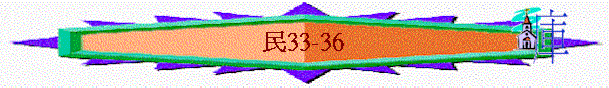

|
超越障礙、邁向豐盛（１－３６） |
|||||||||||||||||
|
預備起行 1-10:10 |
踏上征途10:11-14:45 |
曠野飄流 15-20:13 |
超越障礙 20:14-25:18 | 邁向豐盛 26-36 | |||||||||||||
|
組 織 |
生 活 |
基 礎 |
順 利 |
軟 弱 |
失 敗 |
教 育 |
叛 逆 |
定 例 |
管 教 |
環 境 |
軟 弱 |
咒 詛 |
引 誘 |
組 織 |
軍 令 |
回 顧 |
分 地 |
五.邁向豐盛（摩押平原－－邁向迦南地）26-36
３．回顧前瞻（33）
A.回顧－出埃及的路程（ｖ1-49）
「以色列人按著軍隊，在摩西、亞倫的手下出埃及地所行的路程（或作：站口；下同）記在下面。」33:1
＊為何再要回顧？意義何在？有甚麼真理要點？
〜因新一代選民未曾經歷過出埃及過紅海歷史，從回顧中，增強他們的信心走前面的道路。
a.關乎選民：曾有無懼的心志
ｖ3【．．．．以色列人．．．．在一切埃及人眼前昂然無懼的出去。】
＊少題他們的軟弱
b.關乎路程：曾越艱難的路程
「以色列人從蘭塞起行，安營在疏割。」33:5
＊路程：蘭塞－－摩押平原（至少經42站）
＊曠野：書珥曠野－－伊坦曠野－－汎的曠野－－西乃曠野－－尋曠野
＊困難：ｖ24【經過海中】ｖ14【沒有水喝】ｖ28【亞倫死在何珥山．．．．】
〜這樣艱難，也可以經過，所以選民應有不怕的心繼續上路!
c.關乎真神：曾有大能的工作
ｖ4【．．．．就是耶和華在他們中間所擊殺的；耶和華也敗壞他們的神。】
B.前瞻－－入迦南的指示（ｖ50-56）
a.重要的指示
「耶和華在摩押平原約但河邊、耶利哥對面曉諭摩西說：「你吩咐以色列人說：你們過約但河進迦南地的時候，就要從你們面前趕出那裡所有的居民，毀滅他們一切鏨成的石像和他們一切鑄成的偶像，又拆毀他們一切的邱壇。」33:50-52
（１）趕出所有不潔民－－建立純一的子民
（２）毀滅一切可憎物－－建立純一的關係
b.嚴重的後果
「倘若你們不趕出那地的居民，所容留的居民就必作你們眼中的刺，肋下的荊棘，也必在你們所住的地上擾害你們。而且我素常有意怎樣待他們，也必照樣待你們。」」33:55-56
（１）迦南人必擾害他們
（２）耶和華必管教選民
４．憑信分地（３４－３６）
「耶和華曉諭摩西說：「你吩咐以色列人說：你們到了迦南地，就是歸你們為業的迦南四境之地，南角要從尋的曠野，貼著以東的邊界；南界要從鹽海東頭起。」34:1-3
A.爭戰先－－清楚必得神所指定的地界－－人有信心
「摩西吩咐以色列人說：「這地就是耶和華吩咐拈鬮給九個半支派承受為業的。」34:18
〜還沒有與迦南爭戰，已清楚神必給的地界，人憑信心先分定神的應許地
B.得地後－－仍需顧念特殊群體的需要－－神有恩情
a.利末人－－48座城
「你吩咐以色列人，要從所得為業的地中把些城給利未人居住，也要把這城四圍的郊野給利未人。這城邑要歸他們居住，城邑的郊野可以牧養他們的牛羊和各樣的牲畜，又可以安置他們的財物。」35:2-3
「你們要給利未人的城，共有四十八座，連城帶郊野都要給他們。」35:7
b.誤殺者－－6座逃城
「你吩咐以色列人說：你們過約但河，進了迦南地，就要分出幾座城，為你們作逃城，使誤殺人的可以逃到那裡。這些城可以作逃避報仇人的城，使誤殺人的不至於死，等他站在會眾面前聽審判。你們所分出來的城，要作六座逃城。」35:10-13
(1)設立的對象----誤殺者
(A)故意者----必致死
「若用可以打死人的石頭打死了人，他就是故殺人的；故殺人的必被治死。」35:17
(B)無意者----可逃避
「倘若人沒有仇恨，忽然將人推倒，或是沒有埋伏把物扔在人身上，或是沒有看見的時候用可以打死人的石頭扔在人身上，以致於死，本來與他無仇，也無意害他。會眾就要照典章，在打死人的和報血仇的中間審判。會眾要救這誤殺人的脫離報血仇人的手，也要使他歸入逃城。他要住在其中，直等到受聖膏的大祭司死了。」35:22-25
(2)設立的原因
「會眾要救這誤殺人的脫離報血仇人的手，也要使他歸入逃城。他要住在其中，直等到受聖膏的大祭司死了。但誤殺人的，無論什麼時候，若出了逃城的境外。」35:25-26
(A)受管教
〜誤殺的人要終身在逃城，直到那代大祭司死去，所以某程度上，他也要承擔誤殺帶來的管教
(B)得拯救
〜因他是誤殺，所以可以藉此仍能保住性命，得拯救
(3)審判的原則
(A)有見證人
「這在你們一切的住處，要作你們世世代代的律例典章。「無論誰故殺人，要憑幾個見證人的口把那故殺人的殺了，只是不可憑一個見證的口叫人死。」35:29-30
(B)要受處治
「故殺人、犯死罪的，你們不可收贖價代替他的命；他必被治死。」35:31
(C)為得聖潔
「這樣，你們就不污穢所住之地，因為血是污穢地的；若有在地上流人血的，非流那殺人者的血，那地就不得潔淨（原文作贖）。你們不可玷污所住之地，就是我住在其中之地，因為我耶和華住在以色列人中間。」35:33-34
C.約瑟族----保留產業
(1)失去產業的危機
「說：「耶和華曾吩咐我主拈鬮分地給以色列人為業，我主也受了耶和華的吩咐將我們兄弟西羅非哈的產業分給他的眾女兒。他們若嫁以色列別支派的人，就必將我們祖宗所遺留的產業加在他們丈夫支派的產業中。這樣，我們拈鬮所得的產業就要減少了。到了以色列人的禧年，這女兒的產業就必加在他們丈夫支派的產業上。這樣，我們祖宗支派的產業就減少了。」36:2-4
(2)保留產業的吩咐
「凡在以色列支派中得了產業的女子必作同宗支派人的妻，好叫以色列人各自承受他祖宗的產業。這樣，他們的產業就不從這支派歸到那支派，因為以色列支派的人要各守各的產業。」36:8-9
總結：「這是耶和華在摩押平原約但河邊、耶利哥對面藉著摩西所吩咐以色列人的命令典章。」36:13
完